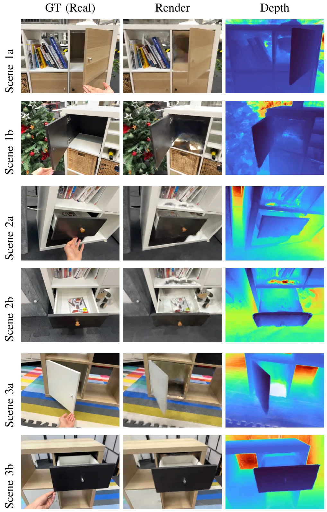
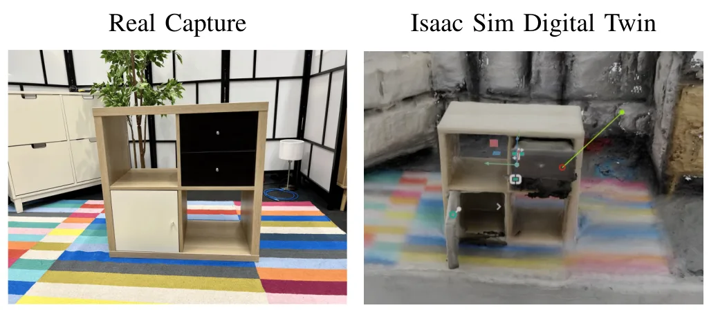

ArtiTwinSplat：从 RGB-D 视频重建可交互数字孪生ArtiTwinSplat: Interactable Digital Twin Reconstruction via Gaussian Splatting from RGB-D videos
对机器人操作、仿真资产构建和数字孪生系统集成有直接价值；重点需关注观测动作覆盖不足时的关节发现鲁棒性和下游规划接口。
一句话工作总结
从真实 RGB-D 视频中结合 3DGS 与无监督关节发现，恢复可渲染、可查询、可操作的铰接物体数字孪生。
摘要
ArtiTwinSplat 面向机器人在非结构化真实环境中的物体建模，目标是无需 CAD、仿真资产或人工标注，直接从 RGB-D 视频构建可交互、照片级真实的铰接物体数字孪生。方法以 3D Gaussian Splatting 保持几何和光度细节，并结合无监督 articulation discovery，从观测运动中恢复部件结构和关节运动学。通过 tracking 与 optimization 阶段，输出支持实时渲染、视角控制和交互式操作的稳定可查询数字孪生。
Deploying robots in unstructured real-world environments needs accurate, interactive models of the objects. Constructing these models at scale remains a critical bottleneck for robotic system integration. We present ArtiTwinSplat, a framework that automatically constructs articulated, photo-realistic digital twins of objects directly from RGB-D videos, requiring no CAD models, simulation assets, or manual annotations. Our method is built on 3D Gaussian Splatting that preserve geometric fidelity and photometric realism, coupled with an unsupervised articulation discovery pipeline that recovers part structure and joint kinematics from observed motion alone. With tracking and optimization stages our method provides stable, queryable digital twins that support real-time rendering, viewpoint control, and interactive manipulation. Unlike prior methods confined to simulation, ArtiTwinSplat operates directly on real-world observations and produces twins that are immediately usable by downstream robot planning and learning systems. This method offers a practical, scalable pathway toward digital twin construction, lowering the integration barrier for articulated object manipulation in embodied AI and human-robot collaboration contexts.
中文解读摘录
- 英文题名：Pocket-SLAM: Rendering-Area-Aware Pruning for Memory-Efficient 3DGS-SLAM
- 作者：Leshu Li, Jie Peng, Yang Zhao
- 类别/来源：cs.CV；comment: 2026 IEEE International Conference on Robotics and Automation (ICRA)；采集 score=17；阅读优先级=9.3/10。
- 一句话总结：用“对有效渲染区域的贡献”而不是单点 opacity/gradient 启发式来剪枝高斯，在保持定位/建图精度的同时显著降低 3DGS-SLAM 运行内存。
- 为什么值得看：这是今天最贴近 SLAM 主线的工作，直接面向大尺度/自动驾驶场景中 3DGS-SLAM 高斯点持续累积的问题；摘要报告 EuRoC/KITTI 上超过 60% 内存降低和 2 倍以上 FPS 提升，且给出了开源仓库地址。后续应复核其 pruning 触发策略、实时开销、对回环/长期地图维护的影响，以及和现有 keyframe/visibility 管理的关系。
- 标签：3DGS-SLAM、内存剪枝、实时建图、自动驾驶
- 链接：abs / PDF
图表/页面预览

{kind=link}

{kind=link}
